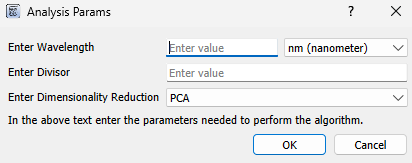

Plugin Utilities#
WISER exposes 4 ways to create your own UI items that get wiser state for your plugins. These ways let you
prompt the user to choose datasets, spectra, ROIs, and bands. You access them
through wiser.gui.app_state.ApplicationState. The methods are:
dataset: RasterDataSet = app_state.choose_dataset_ui()
spectrum: Spectrm = app_state.choose_spectrum_ui()
roi: RegionOfInterest = app_state.choose_roi_ui()
band: RasterDataBand = app_state.choose_band_ui()
The wiser.gui.ui_library.DynamicInputDialog provides a simple way to
collect user input that isn’t tied to WISER’s internal state. By passing in a
list of input specifications, you can dynamically generate a dialog that displays
text fields and combo boxes. This is useful for plugins or tools that need to
ask users for parameters, options, or configuration values before running. You should
not use this class directly and instead use the function ApplicationState.create_form.
Here is an example of its use:
form_inputs = [
("Enter Wavelength", "wvl", 2),
("Enter Divisor", "divisor", 1),
("Enter Dimensionality Reduction", "dim_reduction", 0, ["PCA", "SVD"]),
]
return_dict: Dict[str, Any] = self._app_state.create_form(
form_inputs,
title="Analysis Params",
description="In the above text enter the parameters needed to perform the algorithm.",
)
This will construct a GUI element that looks like this:

The class wiser.gui.ui_library.TableDisplayWidget provides a way
to display the output of your code in the form of a table. You should
not use this class directly and instead use the function ApplicationState.show_table_widget.
An example of how to use it is below:
header = ["Location", "Pizza", "Salad"]
rows = [["LA", "10000", "12000"], ["SF", "3000", "3600"]]
self._app_state.show_table_widget(
header=header,
rows=rows,
window_title="Pizza and Salad by City",
description="Shows the amount of\npizza and salad per city.",
)
The class wiser.gui.ui_library.MatplotlibDisplayWidget provides a way to
display matplotlib plots in a GUI element in WISER. You should
not use this class directly and instead use the function
ApplicationState.show_table_widget. An example of how to use
it through app_state is below:
# Make some 2D data
data = np.random.rand(30, 40)
# Create figure + axes
fig, ax = plt.subplots(figsize=(6, 4))
# Draw heatmap
img = ax.imshow(data, cmap="viridis", origin="lower")
# Add colorbar
cbar = fig.colorbar(img, ax=ax)
cbar.set_label("Intensity")
# Add labels
ax.set_title("Random Heatmap")
ax.set_xlabel("X axis")
ax.set_ylabel("Y axis")
self._app_state.show_matplotlib_display_widget(
figure=fig,
axes=ax,
window_title="Simple Matplotlib Plot",
description="Example to show the matplotlib functionality working",
)
You can also use the function ApplicationState.show_spectra_in_plot to plot a list of spectra in a spectrum plot. Here is an example of its use:
self._app_state = wiser
test_spectrum_y = np.array(
[
0.25744912028312683,
0.2996889650821686,
0.07340309023857117,
0.09369881451129913,
]
)
test_spectrum_x = [
472.019989 * u.nanometer,
532.130005 * u.nanometer,
702.419983 * u.nanometer,
852.679993 * u.nanometer,
]
double = test_spectrum_y + test_spectrum_y
spec1 = NumPyArraySpectrum(test_spectrum_y, "Test_spectrum1", wavelengths=test_spectrum_x)
spec2 = NumPyArraySpectrum(double, "Test_spectrum2", wavelengths=test_spectrum_x)
self._app_state.show_spectra_in_plot([spec1, spec2])
Lastly, below is a tools menu plugin example that asks the user to first select a dataset and then a region of interest in a tools menu plugin:
from wiser.raster.spectrum import SpectrumAverageMode, calc_roi_spectrum
class ExampleToolPlugin(ToolsMenuPlugin):
def __init__(self):
super().__init__()
def add_tool_menu_items(self, tool_menu: QMenu, wiser) -> None:
"""
Use QMenu.addAction() to add individual actions, or QMenu.addMenu() to
add sub-menus to the Tools menu.
"""
act = tool_menu.addAction("ROI Angle Mapper")
act.triggered.connect(self.roi_angle_mapper)
self._app_state = wiser
def roi_angle_mapper(self):
dataset = self._app_state.choose_dataset_ui(description="Description: choose dataset to perform analysis on")
roi = self._app_state.choose_roi_ui(description="Description: choose ROI to get Average Spectrum")
mean_roi_spec_arr = calc_roi_spectrum(dataset=dataset, roi=roi, mode=SpectrumAverageMode.MEAN)
image_arr = dataset.get_image_data()
# Do some math...